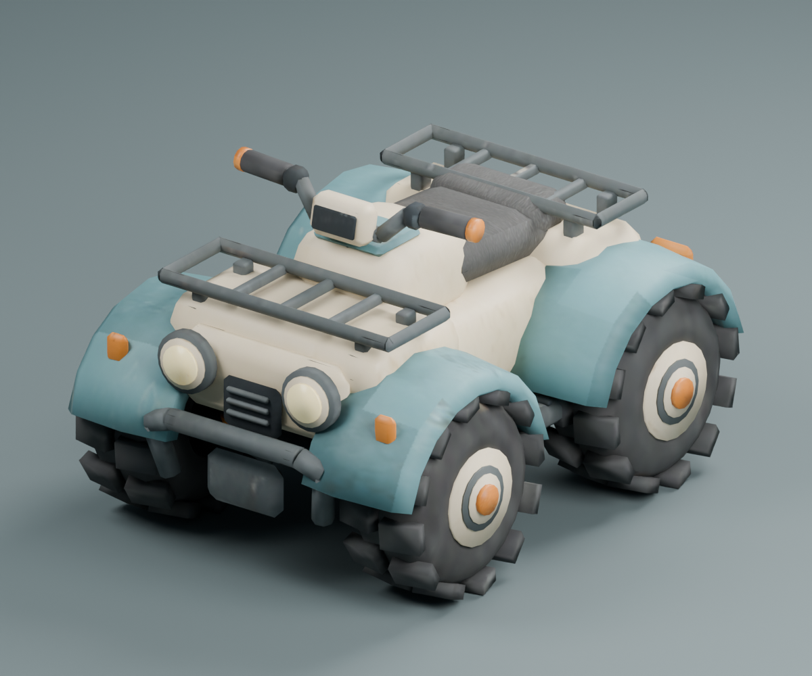
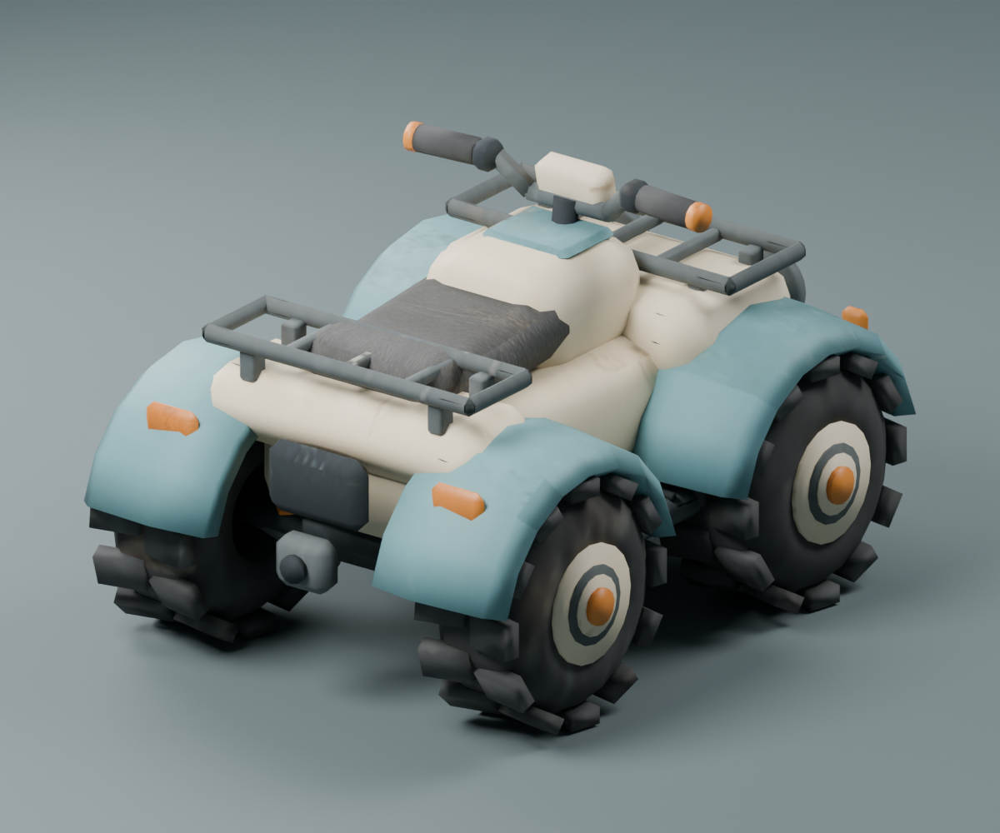
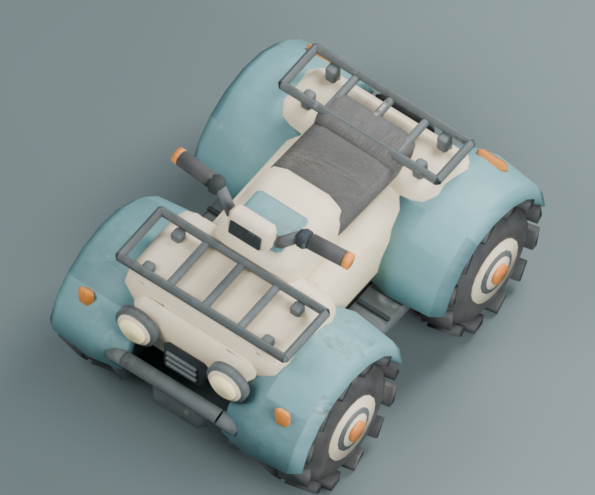

{kind=link}
Blender에서 재생성
ZIP을 풀고 터미널에서 실행합니다. 텍스처 경로는 스크립트 기준으로 자동 탐색합니다.
blender -b --factory-startup --python scripts/build_atv.pySTYLIZED GAME ASSET / ATV
청록색 펜더, 아이보리 차체, 묵직한 네 바퀴.
탑다운 게임을 위한 로우폴리 ATV 에셋 키트.
첨부 레퍼런스에서 시작해
모델부터 임포트까지 하나의 패키지로.
01 / FORM & VIEW
실제 모델의 Blender 렌더입니다.



02 / THE COMPLETE KIT
텍스처 내장 · 단일 메시 · 미터 단위
머터리얼 · 텍스처 · 렌더 장면
고유 UV 아틀라스 · 비반복 표면
모델링 · UV 배정 · GLB / FBX 출력
동봉 FBX → Static Mesh · 충돌 생성
Base Color · Roughness · 램프 발광
ZIP에는 위 파일과 FBX, 렌더, 검증 결과, 지시사항, 이 정적 페이지와 로컬 라이브러리가 함께 들어갑니다.
로컬 파일로 열면 브라우저가 에셋 읽기를 제한합니다. start-preview.cmd 실행 후 http://127.0.0.1:4177에서 이용하세요.
03 / PIPELINE NOTES
자잘한 형상보다 큰 실루엣과 표면 묘사에 집중했습니다. 바퀴·펜더·핸들·랙은 메시로, 색 변화와 마모는 생성 이미지로 표현합니다.
전체 사용 안내 ↗ZIP을 풀고 터미널에서 실행합니다. 텍스처 경로는 스크립트 기준으로 자동 탐색합니다.
blender -b --factory-startup --python scripts/build_atv.pyPython Editor Script Plugin과 Editor Scripting Utilities를 켜고 재시작한 뒤, Tools → Execute Python Script에서 ue57_import.py를 실행합니다. 두 UE 스크립트는 같은 폴더에 두세요.
/Game/ATV_Trail/SM_ATV_Trail메시와 UV 검증 결과를 불러오는 중입니다.
UE 임포트 검증 결과를 불러오는 중입니다.
스태틱 메시 에셋입니다. 차량 리깅·주행 로직은 포함하지 않습니다. UE는 동봉 FBX를 임포트하고 머터리얼을 명시적으로 구성합니다.
UV / GLB 검증 JSON ↗ UE 검증 JSON ↗04 / ORIGINAL BRIEF
첨부 이미지는 시각적 레퍼런스로 사용했습니다. 이미지 속 문구는 사용자 지시와 구분합니다.
지시사항을 불러오는 중입니다.
텍스처 제작 기록: ImageGen 원본 1254 × 1254 ↗ → 최종 고유 UV 아틀라스 2048 × 2048 베이크. 생성 프롬프트 ↗
05 / DELIVERY NOTE
대화의 최종 응답과 동일한 내용을 보관합니다.
{kind=link}